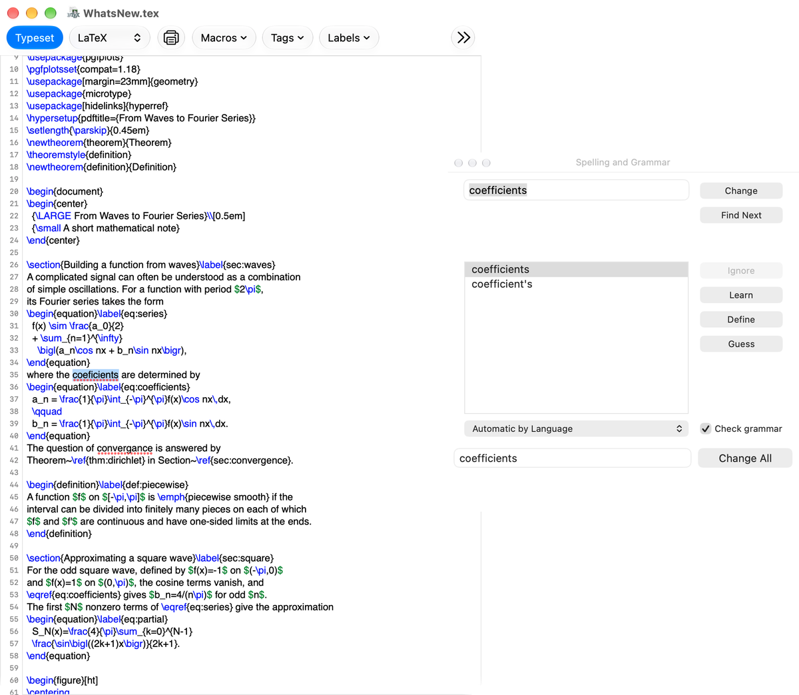

A redesigned Settings window
A new Settings window with a sidebar and a search field.

TeXShop 6.00 — In preparation · Try the latest beta
TeXShop 6 adds a redesigned Settings window, customizable shortcuts and key bindings, LaTeX-aware spell checking, a new Find panel with Multiple Replace, automatic TeX paths, engine profiles, pinned link previews and a status bar with text statistics, changes how a split Preview window behaves, and has a new app icon.
A new Settings window with a sidebar and a search field.
Customize every menu and macro shortcut, and key bindings.


Check the spelling of the text alone, skipping TeX commands, mathematics and comments.

A new Find panel with regular expressions lists or highlights every match.

Save sets of find and replace pairs and apply them all at once.

A status bar under the source shows the lines, characters and words, and Text Statistics counts the text without TeX commands.

TeXShop finds the TeX and Ghostscript installations and sets their paths by itself.

Choose an engine profile to set up typesetting for that TeX engine in one step.

Pin a link preview with the Option key.

In a split Preview window, show a link’s target in the other part or switch the two parts.

Click or drag over the line numbers to select whole lines.
A new app icon made for the design of macOS 26 Tahoe and later. Moreover, the Dock icon can go back to the familiar designs of the past while TeXShop is running, in Settings → General.
All changes, and how to get the earlier behavior back, are in the release notes